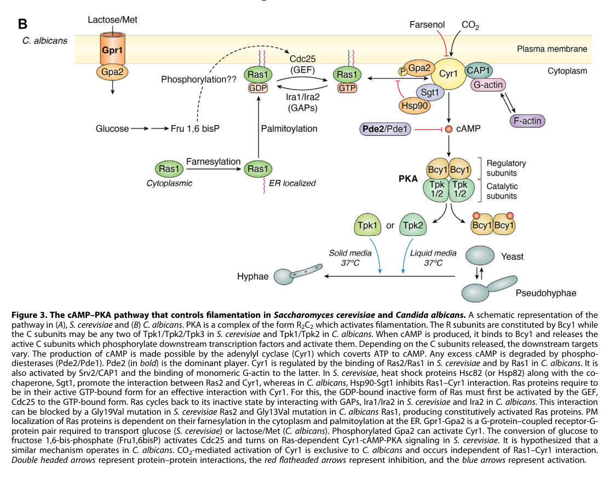

Pde1 is the low-affinity 3',5'-cyclic-nucleotide phosphodiesterase of Candida albicans, a member of the class II PDE family (metallo-beta-lactamase-like fold) shared with S. cerevisiae Pde1, S. pombe Cgs2 and Dictyostelium PdsA. The recombinant enzyme hydrolyses both cAMP (Km ~0.49 mM) and cGMP (Km ~0.25 mM) without a requirement for divalent cations and is relatively insensitive to classical PDE inhibitors. In vivo, Pde1 (rather than the high-affinity Pde2) terminates the transient cAMP spikes produced by adenylyl cyclase (Cyr1) in response to glucose addition and intracellular acidification, thereby damping Ras/cAMP/PKA signalling. The acidification spike depends on the G-alpha protein Gpa2, whereas the glucose spike has been reported to depend on Cdc25-Ras1 rather than on the Gpr1-Gpa2 receptor module, whose candidate ligands are methionine and lactate. Through control of cAMP levels and genetic interaction with GPA2 and PDE2 it contributes secondarily to growth, yeast-to-hypha morphogenesis, stress responses, invasion and virulence.
| GO Term | Evidence | Action | Reason |
|---|---|---|---|
|
GO:0004112
cyclic-nucleotide phosphodiesterase activity
|
IGI
PMID:8075796 A Candida albicans cyclic nucleotide phosphodiesterase: clon... |
ACCEPT |
Summary: Pde1 was cloned by functional complementation of a S. cerevisiae cyclic-nucleotide phosphodiesterase-deficient mutant, and the recombinant enzyme hydrolyses both cAMP and cGMP.
Reason: Complementation of the yeast PDEase-deficient strain, together with direct biochemical assay of the recombinant enzyme, establishes cyclic-nucleotide phosphodiesterase activity. The term is the general parent of the more specific cAMP (GO:0004115) and cGMP (GO:0047555) phosphodiesterase activities that are also annotated; it is correct but less informative than those.
Supporting Evidence:
PMID:8075796
We have cloned a Candida albicans gene, which encodes a cyclic nucleotide phosphodiesterase (PDEase), by complementation in a Saccharomyces cerevisiae PDEase-deficient mutant.
PMID:8075796
it hydrolyses both cAMP (Km = 0.49 mM) and cGMP (Km = 0.25 mM)
|
|
GO:0004115
3',5'-cyclic-AMP phosphodiesterase activity
|
IBA
GO_REF:0000033 |
ACCEPT |
Summary: PAINT node PTN002001416 propagates 3',5'-cyclic-AMP phosphodiesterase activity across the fungal/amoebozoan class II (low-affinity) PDE family; C. albicans Pde1 has its own direct biochemical evidence for this activity.
Reason: Pde1 is a class II cyclic nucleotide phosphodiesterase (Pfam PF02112, PROSITE PS00607) orthologous to S. cerevisiae PDE1, S. pombe cgs2 and Dictyostelium PdsA. Cyclic-AMP hydrolysis is the ancestral activity of this clade and is directly demonstrated for the C. albicans enzyme; the appearance of CGD:CAL0000177603 among the IBA sources reflects that experimental grounding.
Supporting Evidence:
PMID:8075796
The deduced amino acid sequence is similar to that of the low-affinity PDEase of S. cerevisiae (PDE1) and the cyclic nucleotide PDEase (PD) of Dictyostelium discoideum.
PMID:8075796
it hydrolyses both cAMP (Km = 0.49 mM) and cGMP (Km = 0.25 mM)
|
|
GO:0004115
3',5'-cyclic-AMP phosphodiesterase activity
|
IDA
PMID:8075796 A Candida albicans cyclic nucleotide phosphodiesterase: clon... |
ACCEPT |
Summary: Recombinant C. albicans Pde1 produced in S. cerevisiae hydrolyses cAMP with a Km of 0.49 mM, characteristic of the low-affinity class II PDEs.
Reason: Direct enzyme assay of the recombinant protein. cAMP hydrolysis is the core physiological activity of Pde1, which in vivo is responsible for terminating agonist-induced (glucose, intracellular acidification) cAMP spikes.
Supporting Evidence:
PMID:8075796
it hydrolyses both cAMP (Km = 0.49 mM) and cGMP (Km = 0.25 mM)
PMID:20558315
Pde1, but not Pde2, is responsible for down-regulation of cAMP signalling induced by glucose addition or intracellular acidification
|
|
GO:0004115
3',5'-cyclic-AMP phosphodiesterase activity
|
IEA
GO_REF:0000120 |
ACCEPT |
Summary: UniRule/InterPro (IPR000396, class II PDE) based assignment of 3',5'-cyclic-AMP phosphodiesterase activity.
Reason: Consistent with the family membership and with direct biochemical evidence for cAMP hydrolysis by the recombinant enzyme.
Supporting Evidence:
PMID:8075796
it hydrolyses both cAMP (Km = 0.49 mM) and cGMP (Km = 0.25 mM)
|
|
GO:0005575
cellular_component
|
ND
GO_REF:0000015 |
ACCEPT |
Summary: No data root cellular component annotation.
Reason: No experimental localisation of C. albicans Pde1 has been reported in the cached literature. The ND placeholder correctly records that the subcellular location is unknown; it should be replaced when localisation data become available.
|
|
GO:0006198
cAMP catabolic process
|
IEA
GO_REF:0000120 |
ACCEPT |
Summary: UniRule-based assignment of cAMP catabolic process.
Reason: Pde1 hydrolyses cAMP to AMP and is the phosphodiesterase responsible for removing the cAMP produced in response to glucose and intracellular acidification in C. albicans. The enzyme catalyses the catabolic step itself, so the process annotation is a direct consequence of its activity.
Supporting Evidence:
PMID:8075796
it hydrolyses both cAMP (Km = 0.49 mM) and cGMP (Km = 0.25 mM)
PMID:20558315
Pde1, but not Pde2, is responsible for down-regulation of cAMP signalling induced by glucose addition or intracellular acidification
|
|
GO:0008081
phosphoric diester hydrolase activity
|
IEA
GO_REF:0000002 |
ACCEPT |
Summary: InterPro2GO mapping from the class II PDE signature (IPR024225) to phosphoric diester hydrolase activity.
Reason: Correct but very general parent of the cyclic-nucleotide phosphodiesterase activities that are directly demonstrated; acceptable as a broad IEA.
Supporting Evidence:
PMID:8075796
it hydrolyses both cAMP (Km = 0.49 mM) and cGMP (Km = 0.25 mM)
|
|
GO:0030447
filamentous growth
|
IMP
PMID:20558315 Candida albicans Pde1p and Gpa2p comprise a regulatory modul... |
KEEP AS NON CORE |
Summary: Filamentous growth phenotype attributed to PDE1 mutants in Wilson et al. 2010, chiefly seen as synthetic morphogenesis defects in combination with gpa2 (and pde2) mutations.
Reason: The abstract reports morphogenesis defects mainly as synthetic genetic interactions of PDE1 with GPA2, and the authors interpret these as Gpa2 acting through a cAMP-independent route. Pde1's contribution to hyphal growth is therefore indirect, via control of cAMP levels, and secondary to Pde2. The full text (not cached) was read by the CGD curator, so the annotation is retained but as non-core. Note that Gpa2 itself controls filamentation at least partly outside the cAMP pathway (a gpa2 defect is not rescued by cAMP but is bypassed by the HST7 MAPK component), which is consistent with Wilson et al.'s interpretation that the PDE1-GPA2 synthetic morphogenesis phenotypes reflect parallel pathways rather than a direct Pde1 role in hyphal growth.
Supporting Evidence:
PMID:20558315
the genetic interactions of PDE1 and in some cases PDE2, with GPA2 caused synthetic defects in growth, morphogenesis and responses to some stresses
PMID:12477787
These defects cannot be reversed by exogenous addition of cyclic AMP. However, overexpression of HST7, which encodes a component of the filament-inducing mitogen-activated protein kinase (MAPK) cascade, bypasses the Gpa2 requirement.
file:CANAL/PDE1/PDE1-deep-research-falcon.md
reports that a **pde1 mutant filaments normally** in the assessed conditions
|
|
GO:0044182
filamentous growth of a population of unicellular organisms
|
IMP
PMID:20558315 Candida albicans Pde1p and Gpa2p comprise a regulatory modul... |
KEEP AS NON CORE |
Summary: As for GO:0030447; the CGD curator used the population-level filamentous growth term for the same mutant phenotypes.
Reason: Pde1 modulates morphogenesis indirectly through cAMP turnover; the phenotype is mostly synthetic with gpa2. Retained as a non-core, pleiotropic consequence of its role in cAMP signalling. Note that Gpa2 itself controls filamentation at least partly outside the cAMP pathway (a gpa2 defect is not rescued by cAMP but is bypassed by the HST7 MAPK component), which is consistent with Wilson et al.'s interpretation that the PDE1-GPA2 synthetic morphogenesis phenotypes reflect parallel pathways rather than a direct Pde1 role in hyphal growth.
Supporting Evidence:
PMID:20558315
the genetic interactions of PDE1 and in some cases PDE2, with GPA2 caused synthetic defects in growth, morphogenesis and responses to some stresses
PMID:12477787
These defects cannot be reversed by exogenous addition of cyclic AMP. However, overexpression of HST7, which encodes a component of the filament-inducing mitogen-activated protein kinase (MAPK) cascade, bypasses the Gpa2 requirement.
file:CANAL/PDE1/PDE1-deep-research-falcon.md
reports that a **pde1 mutant filaments normally** in the assessed conditions
|
|
GO:0047555
3',5'-cyclic-GMP phosphodiesterase activity
|
IBA
GO_REF:0000033 |
ACCEPT |
Summary: PAINT propagation of 3',5'-cyclic-GMP phosphodiesterase activity in the class II PDE family; C. albicans Pde1 has direct biochemical evidence for cGMP hydrolysis.
Reason: Class II PDEs of fungi and Dictyostelium hydrolyse both cAMP and cGMP, and recombinant C. albicans Pde1 hydrolyses cGMP with a Km of 0.25 mM. The activity is real; its physiological relevance in C. albicans, where cGMP signalling is poorly defined, is uncertain, so cAMP hydrolysis remains the core activity.
Supporting Evidence:
PMID:8075796
it hydrolyses both cAMP (Km = 0.49 mM) and cGMP (Km = 0.25 mM)
file:CANAL/PDE1/PDE1-deep-research-falcon.md
cAMP has approximately 13.6-fold greater *V*max/*K*ₘ
|
|
GO:0047555
3',5'-cyclic-GMP phosphodiesterase activity
|
IDA
PMID:8075796 A Candida albicans cyclic nucleotide phosphodiesterase: clon... |
ACCEPT |
Summary: Recombinant Pde1 hydrolyses cGMP (Km 0.25 mM).
Reason: Direct enzyme assay supports cGMP phosphodiesterase activity. The enzyme is a dual-specificity low-affinity PDE; cGMP hydrolysis is biochemically established even though its in vivo role is unclear.
Supporting Evidence:
PMID:8075796
it hydrolyses both cAMP (Km = 0.49 mM) and cGMP (Km = 0.25 mM)
file:CANAL/PDE1/PDE1-deep-research-falcon.md
cAMP has approximately 13.6-fold greater *V*max/*K*ₘ
|
|
GO:0110034
negative regulation of adenylate cyclase-activating glucose-activated G protein-coupled receptor signaling pathway
|
IBA
GO_REF:0000033 |
MARK AS OVER ANNOTATED |
Summary: PAINT propagation (node PTN002001416, seeded from S. pombe cgs2/pde1) of negative regulation of the adenylate cyclase-activating glucose-activated GPCR (Gpr1/Gpa2) signalling pathway.
Reason: Pde1 certainly hydrolyses the cAMP that this kind of pathway produces, and the S. pombe placement is sound for fission yeast, where Git3/Gpa2 is a bona fide glucose receptor system. The 'glucose-activated' specification does not transfer cleanly to C. albicans, however, because the upstream receptor module has been rewired in this lineage. Maidan et al. (2005) found that neither Gpr1 nor Gpa2 is needed for glucose-induced cAMP signalling, which instead requires Cdc25-Ras1; the candidate CaGpr1 ligands are methionine and lactate rather than sugars. Miwa et al. (2004) reported the opposite (Gpr1/Gpa2 required for a glucose-dependent cAMP increase), so the point is disputed rather than settled. Wilson et al. (2010) place the Pde1-Gpa2 module on intracellular-acidification-induced cAMP, with Pde1 terminating both the glucose and acidification spikes regardless of their upstream route. The receptor-agnostic parent function is already captured by GO:0141162 (negative regulation of cAMP/PKA signal transduction), which is well supported by mutant data. The GPCR-glucose-specific IBA is therefore not wrong in mechanism but over-specifies the input pathway for this organism.
Propagation Review
Root cause:
TERM SCOPING PROBLEM
Failure modes:
GRANULARITY MISMATCH
CONTEXT OR TISSUE MISMATCH
Sources checked:
PANTHER:PTN002001416
· PTN002001416
SUPPORTS SOURCE BUT NOT TARGET
Node placement for the cAMP phosphodiesterase role is sound, and the glucose-GPCR context holds for the S. pombe donor (cgs2, Git3/Gpa2 glucose receptor). In C. albicans the Gpr1/Gpa2 module appears to sense methionine/lactate and glucose-induced cAMP is Ras1/Cdc25-dependent (disputed), so the glucose-activated GPCR specification over-specifies the target context.
Supporting Evidence:
PMID:20558315
Pde1, but not Pde2, is responsible for down-regulation of cAMP signalling induced by glucose addition or intracellular acidification
PMID:20558315
Our biochemical evidence shows that Gpa2 stimulates cAMP signalling in response to intracellular acidification
PMID:15673611
deletion of neither CaGpr1 nor CaGpa2 affects glucose-induced cAMP signaling. In contrast, the latter is abolished in strains lacking CaCdc25 or CaRas1, suggesting that the CaCdc25-CaRas1 rather than the CaGpr1-CaGpa2 module mediates glucose-induced cAMP signaling
PMID:30761119
However, it seems that the ligand(s) for CaGpr1 are not sugars but lactate and methionine.
file:CANAL/PDE1/PDE1-deep-research-falcon.md
A **2005** *C. albicans* genetic study found that loss of **Gpr1 or Gpa2 did not abolish glucose-induced cAMP signaling**, whereas loss of **Cdc25 or Ras1 did**.
|
|
GO:0141162
negative regulation of cAMP/PKA signal transduction
|
IBA
GO_REF:0000033 |
ACCEPT |
Summary: PAINT propagation of negative regulation of cAMP/PKA signal transduction across the class II PDE clade.
Reason: Pde1 hydrolyses cAMP and down-regulates agonist-induced cAMP signalling in C. albicans, as in S. cerevisiae; this is the principal physiological role of the enzyme.
Supporting Evidence:
PMID:20558315
Pde1, but not Pde2, is responsible for down-regulation of cAMP signalling induced by glucose addition or intracellular acidification
PMID:9880329
We show that deletion of PDE1, but not PDE2, results in a much higher cAMP accumulation upon addition of glucose or upon intracellular acidification.
|
|
GO:0141162
negative regulation of cAMP/PKA signal transduction
|
IMP
PMID:20558315 Candida albicans Pde1p and Gpa2p comprise a regulatory modul... |
ACCEPT |
Summary: pde1 mutants show defective down-regulation of glucose- and acidification-induced cAMP signalling.
Reason: Direct mutant evidence in C. albicans that Pde1 terminates agonist-induced cAMP signalling; core biological role.
Supporting Evidence:
PMID:20558315
Pde1, but not Pde2, is responsible for down-regulation of cAMP signalling induced by glucose addition or intracellular acidification
|
|
GO:1900430
positive regulation of filamentous growth of a population of unicellular organisms
|
IMP
PMID:20558315 Candida albicans Pde1p and Gpa2p comprise a regulatory modul... |
KEEP AS NON CORE |
Summary: CGD annotates positive regulation of filamentous growth based on reduced filamentation of PDE1-containing mutant combinations in Wilson et al. 2010.
Reason: The direction of regulation is counter-intuitive for a cAMP-degrading enzyme (elevated cAMP generally promotes hyphae), but C. albicans PDE2 deletion also impairs hyphal development, indicating that properly tuned cAMP turnover rather than low cAMP is needed. The abstract reports the morphogenesis defects as synthetic interactions with GPA2; full text is not cached, so the curator's call is retained, but this is an indirect, non-core consequence of cAMP homeostasis. Note that Gpa2 itself controls filamentation at least partly outside the cAMP pathway (a gpa2 defect is not rescued by cAMP but is bypassed by the HST7 MAPK component), which is consistent with Wilson et al.'s interpretation that the PDE1-GPA2 synthetic morphogenesis phenotypes reflect parallel pathways rather than a direct Pde1 role in hyphal growth.
Supporting Evidence:
PMID:20558315
the genetic interactions of PDE1 and in some cases PDE2, with GPA2 caused synthetic defects in growth, morphogenesis and responses to some stresses
PMID:14523128
In vitro in hypha-inducing liquid medium CaPDE2, deletion prohibits normal hyphal, but not pseudohyphal growth.
PMID:12477787
These defects cannot be reversed by exogenous addition of cyclic AMP. However, overexpression of HST7, which encodes a component of the filament-inducing mitogen-activated protein kinase (MAPK) cascade, bypasses the Gpa2 requirement.
file:CANAL/PDE1/PDE1-deep-research-falcon.md
reports that a **pde1 mutant filaments normally** in the assessed conditions
|
Q: Which upstream input does Pde1 primarily oppose in C. albicans: Ras1/Cdc25-dependent glucose-induced cAMP, Gpa2-dependent acidification-induced cAMP, or Gpr1 ligands such as methionine and lactate? Does a gpa2 pde1 double mutant still show a prolonged cAMP spike after glucose addition?
Suggested experts: Van Dijck P, Stateva L
Q: Is the conserved PKA consensus site in C. albicans Pde1 phosphorylated upon glucose addition, and does this provide feedback inhibition of cAMP accumulation as proposed for S. cerevisiae Pde1 (Ser252)?
Suggested experts: Stateva L, Van Dijck P
Q: Does Pde1 hydrolyse cGMP in vivo, and does C. albicans have any physiological cGMP signalling that would make the cGMP phosphodiesterase activity relevant?
Q: How does loss of a cAMP-degrading enzyme reduce filamentation (positive regulation of filamentous growth), given that elevated cAMP generally promotes hyphae?
Suggested experts: Stateva L
Experiment: Tag Pde1 at the endogenous locus (e.g. GFP) and image in yeast and hyphal cells before and after glucose addition.
Hypothesis: Pde1 localises to the cytoplasm/nucleus as in S. cerevisiae, possibly relocating upon PKA phosphorylation.
Type: Localisation
Experiment: Mutate the conserved PKA consensus serine of C. albicans Pde1 to alanine and measure glucose-induced cAMP spikes and Pde1 phosphorylation.
Hypothesis: The phospho-site mutant behaves like a partial loss of function, enhancing the agonist-induced cAMP rise.
Type: Site-directed mutagenesis
Experiment: Measure cAMP kinetics after glucose, methionine, lactate and intracellular acidification (e.g. 2,4-dinitrophenol) in wild type, pde1, gpa2, ras1 and pde1 gpa2 / pde1 ras1 double mutants.
Hypothesis: pde1 deletion prolongs all agonist-induced cAMP spikes, and the glucose spike is lost in ras1 but not gpa2 backgrounds, showing Pde1 acts on the shared cAMP pool rather than on a specific glucose-GPCR input.
Type: cAMP time course
The research report should be a detailed narrative explaining the function, biological processes, and localization of the gene product. Citations should be given for all claims.
You should prioritize authoritative reviews and primary scientific literature when conducting research. You can supplement
this with annotations you find in gene/protein databases, but these can be outdated or inaccurate.
We are specifically interested in the primary function of the gene - for enzymes, what reaction is catalyzed, and what is the substrate specificity? For transporters, what is the substrate? For structural proteins or adapters, what is the broader structural role? For signaling molecules, what is the role in the pathway.
We are interested in where in or outside the cell the gene product carries out its function.
We are also interested in the signaling or biochemical pathways in which the gene functions. We are less interested in broad pleiotropic effects, except where these elucidate the precise role.
Include evidence where possible. We are interested in both experimental evidence as well as inference from structure, evolution, or bioinformatic analysis. Precise studies should be prioritized over high-throughput, where available.
The target specified here is Pde1 from Candida albicans strain SC5314, annotated in the supplied UniProt record as Q5AGE4, gene PDE1, with locus names CAALFM_C502290WA and orf19.11710. C. albicans literature independently describes Pde1 as a low-affinity, class-II cyclic-nucleotide phosphodiesterase, distinct from the high-affinity, class-I enzyme Pde2. Its supplied PDEase_II/Pdiesterase2 domains are consistent with that assignment. This is not mammalian PDE1 or Saccharomyces cerevisiae Pde1; the latter’s measured kinetics and crystal structure must not be assigned to Q5AGE4. (yao2018crystalstructuresof pages 1-3, huang2019multiplerolesand pages 1-6, tian2014dualspecificityand pages 1-2)
An identifier discrepancy warrants checking before transferring individual experimental annotations: C. albicans pathway reviews and a 2020 study label PDE1 as orf19.4235, whereas the supplied Q5AGE4 record lists orf19.11710. The retrieved literature establishes the C. albicans PDE1 gene-name/function correspondence, but does not independently establish that these two orf19 identifiers map to the same sequence. The biochemical and genetic conclusions below therefore apply to the literature’s named C. albicans Pde1; their assignment to the exact Q5AGE4 sequence remains conditional on resolving that locus mapping. (inglis2013rassignalinggets pages 2-3, she2020mitochondrialcomplexi pages 9-11)
Pde1 hydrolyzes the 3′,5′-cyclic phosphodiester bond of cyclic nucleotides: 3′,5′-cAMP + H₂O → 5′-AMP; it also hydrolyzes 3′,5′-cGMP → 5′-GMP in vitro. By removing cAMP, it acts as a negative regulator of intracellular cAMP signaling rather than as an adenylyl cyclase or a transporter. The class-II assignment predicts a metal-dependent catalytic architecture, but the two-zinc-ion crystal structure often cited for “yeast Pde1” was determined for S. cerevisiae Pde1, not Q5AGE4. (yao2018crystalstructuresof pages 1-3, tian2014dualspecificityand pages 2-3, tian2014dualspecificityand pages 3-4)
Published kinetic values for recombinant C. albicans Pde1, originally reported by Hoyer and colleagues (July 1994) and restated in later biochemical papers, permit a direct substrate comparison. (yao2018crystalstructuresof pages 1-3, tian2014dualspecificityand pages 2-3, yao2018crystalstructuresof pages 10-11)
| Substrate | Kₘ (µM) | Vmax (µmol mg⁻¹ min⁻¹) | Relative Vmax/Kₘ (cAMP = 1) | Interpretation |
|---|---|---|---|---|
| cAMP | 490 | 1.17 | 1.000 | Preferred physiological substrate by catalytic efficiency; directly characterized using recombinant C. albicans Pde1. Values were originally reported by Hoyer et al. (1994) and subsequently reproduced in comparative summaries (yao2018crystalstructuresof pages 1-3, tian2014dualspecificityand pages 2-3, yao2018crystalstructuresof pages 10-11). |
| cGMP | 250 | 0.044 | ≈0.074 | Although its lower Kₘ indicates stronger apparent binding than for cAMP, its ≈26.6-fold lower Vmax makes overall catalytic efficiency ≈13.6-fold lower. Thus, cGMP hydrolysis is detectable but weak, and a physiological cGMP-signaling role remains unsupported (yao2018crystalstructuresof pages 1-3, tian2014dualspecificityand pages 2-3). |
Table: Recombinant Candida albicans Pde1 hydrolyzes both cyclic nucleotides but is approximately 13.6-fold more catalytically efficient toward cAMP. These are C. albicans values, not the distinct Saccharomyces cerevisiae Pde1 measurements.
Although cGMP has the lower Kₘ (250 versus 490 µM), its much smaller Vmax means that cAMP has approximately 13.6-fold greater Vmax/Kₘ under the reported assay conditions. Consequently, “higher affinity for cGMP” must not be read as “cGMP is the principal physiological substrate.” A physiological cGMP-signaling role for this protein has not been demonstrated in the retrieved Candida studies. These numerical parameters are historical measurements, not new 2023–2024 measurements. (yao2018crystalstructuresof pages 1-3, tian2014dualspecificityand pages 2-3, she2020mitochondrialcomplexi pages 9-11)
Pde1’s comparatively high Kₘ for cAMP is consistent with a greater contribution when cAMP rises during stimulation; high-affinity Pde2 is better positioned to regulate low or basal cAMP concentrations. This is a kinetic/pathway interpretation, not a measurement of the substrate concentration at a specific Pde1-containing cellular site. Importantly, direct characterization of C. albicans Pde2 found a cAMP Kₘ of 35 nM; that number belongs to Pde2, not Pde1. (yao2018crystalstructuresof pages 1-3, komath2024toeachits pages 8-9, huang2019multiplerolesand pages 1-6)
In the C. albicans Ras/Gpr1–Gpa2–Cyr1–cAMP–PKA pathway, adenylyl cyclase Cyr1 generates cAMP from ATP. cAMP binds the PKA regulatory subunit Bcy1, permitting the catalytic subunits Tpk1/Tpk2 to signal to downstream effectors. Pde1 and Pde2 counterbalance Cyr1 by hydrolyzing cAMP. The July 2024 pathway review depicts Pde2 as the dominant cAMP-degrading enzyme and discusses lower-affinity Pde1 in the response to transient increases. The resulting effects on morphogenesis are pathway-level consequences, not evidence that Pde1 itself is a structural component of a hypha. (komath2024toeachits pages 6-8, komath2024toeachits pages 8-9, komath2024toeachits media dc46c02c)
A C. albicans-specific review associates Pde1 with repression of cAMP signaling in response to glucose and intracellular acidification and reports that a pde1 mutant filaments normally in the assessed conditions. Combining a pde1 mutation with a pde2 mutation aggravated the latter mutant’s virulence defect, suggesting a conditional or subsidiary contribution rather than the pronounced single-mutant phenotype of Pde2. A primary paper explicitly titled “Candida albicans Pde1p and Gpa2p comprise a regulatory module mediating agonist-induced cAMP signalling and environmental adaptation” was published by Wilson and colleagues in September 2010; its full text was not retrievable here, so specific physical-interaction, epistasis, or stimulus-response magnitudes should not be inferred from its title. (inglis2013rassignalinggets pages 2-3, yao2018crystalstructuresof pages 10-11)
Evidence for pathway coupling does not imply that Gpa2 mediates every glucose response. A 2005 C. albicans genetic study found that loss of Gpr1 or Gpa2 did not abolish glucose-induced cAMP signaling, whereas loss of Cdc25 or Ras1 did. The Gpr1–Gpa2 arm instead contributed to amino-acid-induced morphogenesis in the presence of glucose. This distinction limits overly simple descriptions of a universal “glucose → Gpa2 → Pde1” mechanism. (maidan2005thegproteincoupled pages 1-2)
Site of action: Because its measured substrate is a cellular second messenger and the reported readouts are intracellular cAMP/PKA signaling, Pde1’s supported functional context is inside the fungal cell. The retrieved C. albicans evidence does not establish a specific Pde1 compartment by direct imaging, fractionation, or a validated localization tag. Cytosolic activity is plausible but remains an inference; localization reported for Ras1, Pde2, or PDEs in other fungi must not be reassigned to C. albicans Pde1. (huang2019multiplerolesand pages 1-6, she2020mitochondrialcomplexi pages 9-11, inglis2013rassignalinggets pages 2-3)
The 2024 review consolidates the current pathway model but contributes no new Q5AGE4-specific localization or substrate-kinetic experiment. In a C. albicans mitochondrial-stress study published November 2020, PDE1 transcript levels decreased in several complex-I mutants, while PDE2 rose more than 25-fold in the ndh51 mutant; total cAMP-phosphodiesterase activity rose threefold in that mutant. Because activity was measured for combined cAMP-degrading enzymes, these figures cannot be interpreted as a threefold change in Pde1 activity. They illustrate the practical need to distinguish transcript abundance, individual-enzyme activity and network-level cAMP changes. (komath2024toeachits pages 6-8, she2020mitochondrialcomplexi pages 8-9, she2020mitochondrialcomplexi pages 9-11)
The experimentally useful implementation at present is functional annotation and genetic dissection of Candida cAMP homeostasis, including comparison of PDE1 and PDE2 perturbations in stimulus-response assays; the retrieved evidence does not establish a clinically implemented Pde1-selective drug or diagnostic test. Claims that Candida Pde1 is directly phosphorylated and activated by PKA* should also be qualified: that feedback was experimentally demonstrated for S. cerevisiae Pde1, and conservation of a candidate phosphorylation motif in the C. albicans* homologue is not itself a direct Candida phosphoregulation experiment. Likewise, S. cerevisiae Pde1’s comparatively efficient cGMP hydrolysis does not overturn the measured cAMP preference of the Candida enzyme. (ma1999thepde1encodedlowaffinity pages 1-2, ma1999thepde1encodedlowaffinity pages 11-13, tian2014dualspecificityand pages 1-2, tian2014dualspecificityand pages 2-3)
Bottom line: Subject to verification of the conflicting orf19.11710/orf19.4235 identifiers, C. albicans Pde1 is best annotated as an intracellular, low-affinity, class-II cyclic-nucleotide phosphodiesterase whose demonstrated chemistry favors cAMP hydrolysis and whose best-supported cellular role is attenuation of cAMP–PKA signaling during environmental responses. Its precise intracellular compartment, direct Candida-specific PKA feedback mechanism and any physiological cGMP-signaling role remain unresolved in the evidence reviewed here. (yao2018crystalstructuresof pages 1-3, inglis2013rassignalinggets pages 2-3, komath2024toeachits pages 6-8, she2020mitochondrialcomplexi pages 9-11)
References
(yao2018crystalstructuresof pages 1-3): Ting Yao, Yi-You Huang, Meng Zhang, Yujuan Chen, Hai-Run Pei, Jian-You Shi, Huanchen Wang, You-Sheng Wang, and H. Ke. Crystal structures of candida albicans phosphodiesterase-2 and implication on its biological functions. Biochemistry, 57:6070-6077, Sep 2018. URL: https://doi.org/10.1021/acs.biochem.8b00707, doi:10.1021/acs.biochem.8b00707. This article has 1 citations and is from a peer-reviewed journal.
(huang2019multiplerolesand pages 1-6): Guanghua Huang, Qian Huang, Yujia Wei, Yue Wang, and Han Du. Multiple roles and diverse regulation of the ras/camp/protein kinase a pathway in candida albicans. Molecular Microbiology, 111:6-16, Nov 2019. URL: https://doi.org/10.1111/mmi.14148, doi:10.1111/mmi.14148. This article has 132 citations and is from a domain leading peer-reviewed journal.
(tian2014dualspecificityand pages 1-2): Yuanyuan Tian, Wenjun Cui, Manna Huang, Howard Robinson, Yiqian Wan, Yousheng Wang, and Hengming Ke. Dual specificity and novel structural folding of yeast phosphodiesterase-1 for hydrolysis of second messengers cyclic adenosine and guanosine 3′,5′-monophosphate. Jul 2014. URL: https://doi.org/10.1021/bi500406h, doi:10.1021/bi500406h. This article has 28 citations and is from a peer-reviewed journal.
(inglis2013rassignalinggets pages 2-3): Diane O. Inglis and Gavin Sherlock. Ras signaling gets fine-tuned: regulation of multiple pathogenic traits of candida albicans. Oct 2013. URL: https://doi.org/10.1128/ec.00094-13, doi:10.1128/ec.00094-13. This article has 88 citations and is from a peer-reviewed journal.
(she2020mitochondrialcomplexi pages 9-11): Xiaodong She, Lulu Zhang, Jingwen Peng, Jingyun Zhang, Hongbin Li, Pengyi Zhang, Richard Calderone, Weida Liu, and Dongmei Li. Mitochondrial complex i core protein regulates camp signaling via phosphodiesterase pde2 and nad homeostasis in candida albicans. Frontiers in Microbiology, Nov 2020. URL: https://doi.org/10.3389/fmicb.2020.559975, doi:10.3389/fmicb.2020.559975. This article has 20 citations and is from a peer-reviewed journal.
(tian2014dualspecificityand pages 2-3): Yuanyuan Tian, Wenjun Cui, Manna Huang, Howard Robinson, Yiqian Wan, Yousheng Wang, and Hengming Ke. Dual specificity and novel structural folding of yeast phosphodiesterase-1 for hydrolysis of second messengers cyclic adenosine and guanosine 3′,5′-monophosphate. Jul 2014. URL: https://doi.org/10.1021/bi500406h, doi:10.1021/bi500406h. This article has 28 citations and is from a peer-reviewed journal.
(tian2014dualspecificityand pages 3-4): Yuanyuan Tian, Wenjun Cui, Manna Huang, Howard Robinson, Yiqian Wan, Yousheng Wang, and Hengming Ke. Dual specificity and novel structural folding of yeast phosphodiesterase-1 for hydrolysis of second messengers cyclic adenosine and guanosine 3′,5′-monophosphate. Jul 2014. URL: https://doi.org/10.1021/bi500406h, doi:10.1021/bi500406h. This article has 28 citations and is from a peer-reviewed journal.
(yao2018crystalstructuresof pages 10-11): Ting Yao, Yi-You Huang, Meng Zhang, Yujuan Chen, Hai-Run Pei, Jian-You Shi, Huanchen Wang, You-Sheng Wang, and H. Ke. Crystal structures of candida albicans phosphodiesterase-2 and implication on its biological functions. Biochemistry, 57:6070-6077, Sep 2018. URL: https://doi.org/10.1021/acs.biochem.8b00707, doi:10.1021/acs.biochem.8b00707. This article has 1 citations and is from a peer-reviewed journal.
(komath2024toeachits pages 8-9): Sneha Sudha Komath. To each its own: mechanisms of cross-talk between gpi biosynthesis and camp-pka signaling in candida albicans versus saccharomyces cerevisiae. Jul 2024. URL: https://doi.org/10.1016/j.jbc.2024.107444, doi:10.1016/j.jbc.2024.107444. This article has 5 citations and is from a domain leading peer-reviewed journal.
(komath2024toeachits pages 6-8): Sneha Sudha Komath. To each its own: mechanisms of cross-talk between gpi biosynthesis and camp-pka signaling in candida albicans versus saccharomyces cerevisiae. Jul 2024. URL: https://doi.org/10.1016/j.jbc.2024.107444, doi:10.1016/j.jbc.2024.107444. This article has 5 citations and is from a domain leading peer-reviewed journal.
(komath2024toeachits media dc46c02c): Sneha Sudha Komath. To each its own: mechanisms of cross-talk between gpi biosynthesis and camp-pka signaling in candida albicans versus saccharomyces cerevisiae. Jul 2024. URL: https://doi.org/10.1016/j.jbc.2024.107444, doi:10.1016/j.jbc.2024.107444. This article has 5 citations and is from a domain leading peer-reviewed journal.
(maidan2005thegproteincoupled pages 1-2): Mykola M. Maidan, Larissa De Rop, Joke Serneels, Simone Exler, Steffen Rupp, Hélène Tournu, Johan M. Thevelein, and Patrick Van Dijck. The g protein-coupled receptor gpr1 and the galpha protein gpa2 act through the camp-protein kinase a pathway to induce morphogenesis in candida albicans. Molecular biology of the cell, 16 4:1971-86, Apr 2005. URL: https://doi.org/10.1091/mbc.e04-09-0780, doi:10.1091/mbc.e04-09-0780. This article has 260 citations and is from a domain leading peer-reviewed journal.
(she2020mitochondrialcomplexi pages 8-9): Xiaodong She, Lulu Zhang, Jingwen Peng, Jingyun Zhang, Hongbin Li, Pengyi Zhang, Richard Calderone, Weida Liu, and Dongmei Li. Mitochondrial complex i core protein regulates camp signaling via phosphodiesterase pde2 and nad homeostasis in candida albicans. Frontiers in Microbiology, Nov 2020. URL: https://doi.org/10.3389/fmicb.2020.559975, doi:10.3389/fmicb.2020.559975. This article has 20 citations and is from a peer-reviewed journal.
(ma1999thepde1encodedlowaffinity pages 1-2): Pingsheng Ma, Stefaan Wera, Patrick Van Dijck, and Johan M. Thevelein. The pde1-encoded low-affinity phosphodiesterase in the yeast saccharomyces cerevisiae has a specific function in controlling agonist-induced camp signaling. Molecular biology of the cell, 10 1:91-104, Jan 1999. URL: https://doi.org/10.1091/mbc.10.1.91, doi:10.1091/mbc.10.1.91. This article has 257 citations and is from a domain leading peer-reviewed journal.
(ma1999thepde1encodedlowaffinity pages 11-13): Pingsheng Ma, Stefaan Wera, Patrick Van Dijck, and Johan M. Thevelein. The pde1-encoded low-affinity phosphodiesterase in the yeast saccharomyces cerevisiae has a specific function in controlling agonist-induced camp signaling. Molecular biology of the cell, 10 1:91-104, Jan 1999. URL: https://doi.org/10.1091/mbc.10.1.91, doi:10.1091/mbc.10.1.91. This article has 257 citations and is from a domain leading peer-reviewed journal.
(tian2014dualspecificityand pages 7-8): Yuanyuan Tian, Wenjun Cui, Manna Huang, Howard Robinson, Yiqian Wan, Yousheng Wang, and Hengming Ke. Dual specificity and novel structural folding of yeast phosphodiesterase-1 for hydrolysis of second messengers cyclic adenosine and guanosine 3′,5′-monophosphate. Jul 2014. URL: https://doi.org/10.1021/bi500406h, doi:10.1021/bi500406h. This article has 28 citations and is from a peer-reviewed journal.

just deep-research-falcon CANAL PDE1 --fallback perplexity-lite: the wrapper reported failure (falcon timed out after 600 s; perplexity not configured), but the falcon job itself completed at 898 s and wrote PDE1-deep-research-falcon.md, which was then used.There is no evidence of a physical Pde1-Gpa2 interaction; the "regulatory module" of Wilson et al. 2010 is functional/genetic.
- Gpa2 drives acidification-induced cAMP PMID:20558315; Pde1 terminates both glucose- and acidification-induced spikes.
- Synthetic pde1 gpa2 defects (growth, morphogenesis, stress) are read by the authors as Gpa2 acting outside the cAMP pathway PMID:20558315. Consistent with Gpa2 having a MAPK-linked role PMID:12477787
- Is the Gpr1-Gpa2 module glucose-activated in C. albicans? Disputed:
- Yes: PMID:15302825
- No: PMID:15673611; ligands appear to be methionine/lactate PMID:30761119; Gpr1 mediates lactate-induced beta-glucan masking PMID:27941860.
- Consequence for review: IBA GO:0110034 (negative regulation of adenylate cyclase-activating glucose-activated GPCR signalling, donor S. pombe cgs2) changed ACCEPT -> MARK_AS_OVER_ANNOTATED (TERM_SCOPING_PROBLEM). Receptor-agnostic GO:0141162 retained as core. PMID:15302825 finding marked DISPUTED.
- Deep research also notes (citing Inglis & Sherlock 2013) that a pde1 single mutant filaments normally, consistent with keeping the filamentous growth IMPs as non-core.
Falcon flagged that some literature labels PDE1 as orf19.4235 whereas UniProt Q5AGE4 lists orf19.11710. CGD's own PDE1 locus (CAL0000177603) cross-references Q5AGE4 and is the source of the IDA/IMP annotations, so the gene-to-accession mapping is CGD's. (Assembly 19 assigned separate orf19 numbers to allelic ORFs, which likely explains the two numbers; not independently verified here.)
id: Q5AGE4
gene_symbol: PDE1
product_type: PROTEIN
status: DRAFT
taxon:
id: NCBITaxon:237561
label: Candida albicans (strain SC5314 / ATCC MYA-2876)
description: Pde1 is the low-affinity 3',5'-cyclic-nucleotide phosphodiesterase of Candida albicans, a
member of the class II PDE family (metallo-beta-lactamase-like fold) shared with S. cerevisiae Pde1,
S. pombe Cgs2 and Dictyostelium PdsA. The recombinant enzyme hydrolyses both cAMP (Km ~0.49 mM) and
cGMP (Km ~0.25 mM) without a requirement for divalent cations and is relatively insensitive to classical
PDE inhibitors. In vivo, Pde1 (rather than the high-affinity Pde2) terminates the transient cAMP spikes
produced by adenylyl cyclase (Cyr1) in response to glucose addition and intracellular acidification,
thereby damping Ras/cAMP/PKA signalling. The acidification spike depends on the G-alpha protein Gpa2,
whereas the glucose spike has been reported to depend on Cdc25-Ras1 rather than on the Gpr1-Gpa2 receptor
module, whose candidate ligands are methionine and lactate. Through control of cAMP levels and genetic
interaction with GPA2 and PDE2 it contributes secondarily to growth, yeast-to-hypha morphogenesis, stress
responses, invasion and virulence.
existing_annotations:
- term:
id: GO:0004112
label: cyclic-nucleotide phosphodiesterase activity
evidence_type: IGI
original_reference_id: PMID:8075796
qualifier: enables
supporting_entities:
- SGD:S000003217
review:
summary: Pde1 was cloned by functional complementation of a S. cerevisiae cyclic-nucleotide phosphodiesterase-deficient
mutant, and the recombinant enzyme hydrolyses both cAMP and cGMP.
action: ACCEPT
reason: Complementation of the yeast PDEase-deficient strain, together with direct biochemical assay
of the recombinant enzyme, establishes cyclic-nucleotide phosphodiesterase activity. The term is
the general parent of the more specific cAMP (GO:0004115) and cGMP (GO:0047555) phosphodiesterase
activities that are also annotated; it is correct but less informative than those.
supported_by:
- reference_id: PMID:8075796
supporting_text: We have cloned a Candida albicans gene, which encodes a cyclic nucleotide phosphodiesterase
(PDEase), by complementation in a Saccharomyces cerevisiae PDEase-deficient mutant.
- reference_id: PMID:8075796
supporting_text: it hydrolyses both cAMP (Km = 0.49 mM) and cGMP (Km = 0.25 mM)
- term:
id: GO:0004115
label: 3',5'-cyclic-AMP phosphodiesterase activity
evidence_type: IBA
original_reference_id: GO_REF:0000033
qualifier: enables
supporting_entities:
- CGD:CAL0000177603
- PANTHER:PTN002001416
- PomBase:SPCC285.09c
- SGD:S000003217
- dictyBase:DDB_G0285995
- dictyBase:DDB_G0289145
review:
summary: PAINT node PTN002001416 propagates 3',5'-cyclic-AMP phosphodiesterase activity across the
fungal/amoebozoan class II (low-affinity) PDE family; C. albicans Pde1 has its own direct biochemical
evidence for this activity.
action: ACCEPT
reason: Pde1 is a class II cyclic nucleotide phosphodiesterase (Pfam PF02112, PROSITE PS00607) orthologous
to S. cerevisiae PDE1, S. pombe cgs2 and Dictyostelium PdsA. Cyclic-AMP hydrolysis is the ancestral
activity of this clade and is directly demonstrated for the C. albicans enzyme; the appearance of
CGD:CAL0000177603 among the IBA sources reflects that experimental grounding.
supported_by:
- reference_id: PMID:8075796
supporting_text: The deduced amino acid sequence is similar to that of the low-affinity PDEase of
S. cerevisiae (PDE1) and the cyclic nucleotide PDEase (PD) of Dictyostelium discoideum.
- reference_id: PMID:8075796
supporting_text: it hydrolyses both cAMP (Km = 0.49 mM) and cGMP (Km = 0.25 mM)
- term:
id: GO:0004115
label: 3',5'-cyclic-AMP phosphodiesterase activity
evidence_type: IDA
original_reference_id: PMID:8075796
qualifier: enables
review:
summary: Recombinant C. albicans Pde1 produced in S. cerevisiae hydrolyses cAMP with a Km of 0.49
mM, characteristic of the low-affinity class II PDEs.
action: ACCEPT
reason: Direct enzyme assay of the recombinant protein. cAMP hydrolysis is the core physiological
activity of Pde1, which in vivo is responsible for terminating agonist-induced (glucose, intracellular
acidification) cAMP spikes.
supported_by:
- reference_id: PMID:8075796
supporting_text: it hydrolyses both cAMP (Km = 0.49 mM) and cGMP (Km = 0.25 mM)
- reference_id: PMID:20558315
supporting_text: Pde1, but not Pde2, is responsible for down-regulation of cAMP signalling induced
by glucose addition or intracellular acidification
- term:
id: GO:0004115
label: 3',5'-cyclic-AMP phosphodiesterase activity
evidence_type: IEA
original_reference_id: GO_REF:0000120
qualifier: enables
supporting_entities:
- InterPro:IPR000396
- UniRule:UR000398751
review:
summary: UniRule/InterPro (IPR000396, class II PDE) based assignment of 3',5'-cyclic-AMP phosphodiesterase
activity.
action: ACCEPT
reason: Consistent with the family membership and with direct biochemical evidence for cAMP hydrolysis
by the recombinant enzyme.
supported_by:
- reference_id: PMID:8075796
supporting_text: it hydrolyses both cAMP (Km = 0.49 mM) and cGMP (Km = 0.25 mM)
- term:
id: GO:0005575
label: cellular_component
evidence_type: ND
original_reference_id: GO_REF:0000015
qualifier: is_active_in
review:
summary: No data root cellular component annotation.
action: ACCEPT
reason: No experimental localisation of C. albicans Pde1 has been reported in the cached literature.
The ND placeholder correctly records that the subcellular location is unknown; it should be replaced
when localisation data become available.
- term:
id: GO:0006198
label: cAMP catabolic process
evidence_type: IEA
original_reference_id: GO_REF:0000120
qualifier: involved_in
supporting_entities:
- InterPro:IPR000396
- UniRule:UR000398751
review:
summary: UniRule-based assignment of cAMP catabolic process.
action: ACCEPT
reason: Pde1 hydrolyses cAMP to AMP and is the phosphodiesterase responsible for removing the cAMP
produced in response to glucose and intracellular acidification in C. albicans. The enzyme catalyses
the catabolic step itself, so the process annotation is a direct consequence of its activity.
supported_by:
- reference_id: PMID:8075796
supporting_text: it hydrolyses both cAMP (Km = 0.49 mM) and cGMP (Km = 0.25 mM)
- reference_id: PMID:20558315
supporting_text: Pde1, but not Pde2, is responsible for down-regulation of cAMP signalling induced
by glucose addition or intracellular acidification
- term:
id: GO:0008081
label: phosphoric diester hydrolase activity
evidence_type: IEA
original_reference_id: GO_REF:0000002
qualifier: enables
supporting_entities:
- InterPro:IPR024225
review:
summary: InterPro2GO mapping from the class II PDE signature (IPR024225) to phosphoric diester hydrolase
activity.
action: ACCEPT
reason: Correct but very general parent of the cyclic-nucleotide phosphodiesterase activities that
are directly demonstrated; acceptable as a broad IEA.
supported_by:
- reference_id: PMID:8075796
supporting_text: it hydrolyses both cAMP (Km = 0.49 mM) and cGMP (Km = 0.25 mM)
- term:
id: GO:0030447
label: filamentous growth
evidence_type: IMP
original_reference_id: PMID:20558315
qualifier: involved_in
review:
summary: Filamentous growth phenotype attributed to PDE1 mutants in Wilson et al. 2010, chiefly seen
as synthetic morphogenesis defects in combination with gpa2 (and pde2) mutations.
action: KEEP_AS_NON_CORE
reason: The abstract reports morphogenesis defects mainly as synthetic genetic interactions of PDE1
with GPA2, and the authors interpret these as Gpa2 acting through a cAMP-independent route. Pde1's
contribution to hyphal growth is therefore indirect, via control of cAMP levels, and secondary to
Pde2. The full text (not cached) was read by the CGD curator, so the annotation is retained but
as non-core. Note that Gpa2 itself controls filamentation at least partly outside the cAMP pathway
(a gpa2 defect is not rescued by cAMP but is bypassed by the HST7 MAPK component), which is consistent
with Wilson et al.'s interpretation that the PDE1-GPA2 synthetic morphogenesis phenotypes reflect
parallel pathways rather than a direct Pde1 role in hyphal growth.
supported_by:
- reference_id: PMID:20558315
supporting_text: the genetic interactions of PDE1 and in some cases PDE2, with GPA2 caused synthetic
defects in growth, morphogenesis and responses to some stresses
- reference_id: PMID:12477787
supporting_text: These defects cannot be reversed by exogenous addition of cyclic AMP. However,
overexpression of HST7, which encodes a component of the filament-inducing mitogen-activated protein
kinase (MAPK) cascade, bypasses the Gpa2 requirement.
- reference_id: file:CANAL/PDE1/PDE1-deep-research-falcon.md
supporting_text: reports that a **pde1 mutant filaments normally** in the assessed conditions
additional_reference_ids:
- PMID:12477787
- term:
id: GO:0044182
label: filamentous growth of a population of unicellular organisms
evidence_type: IMP
original_reference_id: PMID:20558315
qualifier: involved_in
review:
summary: As for GO:0030447; the CGD curator used the population-level filamentous growth term for
the same mutant phenotypes.
action: KEEP_AS_NON_CORE
reason: Pde1 modulates morphogenesis indirectly through cAMP turnover; the phenotype is mostly synthetic
with gpa2. Retained as a non-core, pleiotropic consequence of its role in cAMP signalling. Note
that Gpa2 itself controls filamentation at least partly outside the cAMP pathway (a gpa2 defect
is not rescued by cAMP but is bypassed by the HST7 MAPK component), which is consistent with Wilson
et al.'s interpretation that the PDE1-GPA2 synthetic morphogenesis phenotypes reflect parallel pathways
rather than a direct Pde1 role in hyphal growth.
supported_by:
- reference_id: PMID:20558315
supporting_text: the genetic interactions of PDE1 and in some cases PDE2, with GPA2 caused synthetic
defects in growth, morphogenesis and responses to some stresses
- reference_id: PMID:12477787
supporting_text: These defects cannot be reversed by exogenous addition of cyclic AMP. However,
overexpression of HST7, which encodes a component of the filament-inducing mitogen-activated protein
kinase (MAPK) cascade, bypasses the Gpa2 requirement.
- reference_id: file:CANAL/PDE1/PDE1-deep-research-falcon.md
supporting_text: reports that a **pde1 mutant filaments normally** in the assessed conditions
additional_reference_ids:
- PMID:12477787
- term:
id: GO:0047555
label: 3',5'-cyclic-GMP phosphodiesterase activity
evidence_type: IBA
original_reference_id: GO_REF:0000033
qualifier: enables
supporting_entities:
- CGD:CAL0000177603
- PANTHER:PTN002001416
- PomBase:SPCC285.09c
- dictyBase:DDB_G0285995
- dictyBase:DDB_G0289145
review:
summary: PAINT propagation of 3',5'-cyclic-GMP phosphodiesterase activity in the class II PDE family;
C. albicans Pde1 has direct biochemical evidence for cGMP hydrolysis.
action: ACCEPT
reason: Class II PDEs of fungi and Dictyostelium hydrolyse both cAMP and cGMP, and recombinant C.
albicans Pde1 hydrolyses cGMP with a Km of 0.25 mM. The activity is real; its physiological relevance
in C. albicans, where cGMP signalling is poorly defined, is uncertain, so cAMP hydrolysis remains
the core activity.
supported_by:
- reference_id: PMID:8075796
supporting_text: it hydrolyses both cAMP (Km = 0.49 mM) and cGMP (Km = 0.25 mM)
- reference_id: file:CANAL/PDE1/PDE1-deep-research-falcon.md
supporting_text: cAMP has approximately 13.6-fold greater *V*max/*K*ₘ
- term:
id: GO:0047555
label: 3',5'-cyclic-GMP phosphodiesterase activity
evidence_type: IDA
original_reference_id: PMID:8075796
qualifier: enables
review:
summary: Recombinant Pde1 hydrolyses cGMP (Km 0.25 mM).
action: ACCEPT
reason: Direct enzyme assay supports cGMP phosphodiesterase activity. The enzyme is a dual-specificity
low-affinity PDE; cGMP hydrolysis is biochemically established even though its in vivo role is unclear.
supported_by:
- reference_id: PMID:8075796
supporting_text: it hydrolyses both cAMP (Km = 0.49 mM) and cGMP (Km = 0.25 mM)
- reference_id: file:CANAL/PDE1/PDE1-deep-research-falcon.md
supporting_text: cAMP has approximately 13.6-fold greater *V*max/*K*ₘ
- term:
id: GO:0110034
label: negative regulation of adenylate cyclase-activating glucose-activated G protein-coupled receptor
signaling pathway
evidence_type: IBA
original_reference_id: GO_REF:0000033
qualifier: involved_in
supporting_entities:
- PANTHER:PTN002001416
- PomBase:SPCC285.09c
review:
summary: PAINT propagation (node PTN002001416, seeded from S. pombe cgs2/pde1) of negative regulation
of the adenylate cyclase-activating glucose-activated GPCR (Gpr1/Gpa2) signalling pathway.
action: MARK_AS_OVER_ANNOTATED
reason: Pde1 certainly hydrolyses the cAMP that this kind of pathway produces, and the S. pombe placement
is sound for fission yeast, where Git3/Gpa2 is a bona fide glucose receptor system. The 'glucose-activated'
specification does not transfer cleanly to C. albicans, however, because the upstream receptor module
has been rewired in this lineage. Maidan et al. (2005) found that neither Gpr1 nor Gpa2 is needed
for glucose-induced cAMP signalling, which instead requires Cdc25-Ras1; the candidate CaGpr1 ligands
are methionine and lactate rather than sugars. Miwa et al. (2004) reported the opposite (Gpr1/Gpa2
required for a glucose-dependent cAMP increase), so the point is disputed rather than settled. Wilson
et al. (2010) place the Pde1-Gpa2 module on intracellular-acidification-induced cAMP, with Pde1
terminating both the glucose and acidification spikes regardless of their upstream route. The receptor-agnostic
parent function is already captured by GO:0141162 (negative regulation of cAMP/PKA signal transduction),
which is well supported by mutant data. The GPCR-glucose-specific IBA is therefore not wrong in
mechanism but over-specifies the input pathway for this organism.
propagation_review:
root_cause: TERM_SCOPING_PROBLEM
failure_modes:
- GRANULARITY_MISMATCH
- CONTEXT_OR_TISSUE_MISMATCH
source_entities:
- source_id: PANTHER:PTN002001416
source_label: PTN002001416
source_status: SUPPORTS_SOURCE_BUT_NOT_TARGET
comment: Node placement for the cAMP phosphodiesterase role is sound, and the glucose-GPCR context
holds for the S. pombe donor (cgs2, Git3/Gpa2 glucose receptor). In C. albicans the Gpr1/Gpa2
module appears to sense methionine/lactate and glucose-induced cAMP is Ras1/Cdc25-dependent
(disputed), so the glucose-activated GPCR specification over-specifies the target context.
supported_by:
- reference_id: PMID:20558315
supporting_text: Pde1, but not Pde2, is responsible for down-regulation of cAMP signalling induced
by glucose addition or intracellular acidification
- reference_id: PMID:20558315
supporting_text: Our biochemical evidence shows that Gpa2 stimulates cAMP signalling in response
to intracellular acidification
- reference_id: PMID:15673611
supporting_text: deletion of neither CaGpr1 nor CaGpa2 affects glucose-induced cAMP signaling. In
contrast, the latter is abolished in strains lacking CaCdc25 or CaRas1, suggesting that the CaCdc25-CaRas1
rather than the CaGpr1-CaGpa2 module mediates glucose-induced cAMP signaling
- reference_id: PMID:30761119
supporting_text: However, it seems that the ligand(s) for CaGpr1 are not sugars but lactate and
methionine.
- reference_id: file:CANAL/PDE1/PDE1-deep-research-falcon.md
supporting_text: A **2005** *C. albicans* genetic study found that loss of **Gpr1 or Gpa2 did not
abolish glucose-induced cAMP signaling**, whereas loss of **Cdc25 or Ras1 did**.
additional_reference_ids:
- PMID:15673611
- PMID:15302825
- PMID:30761119
- term:
id: GO:0141162
label: negative regulation of cAMP/PKA signal transduction
evidence_type: IBA
original_reference_id: GO_REF:0000033
qualifier: involved_in
supporting_entities:
- CGD:CAL0000177603
- PANTHER:PTN002001416
review:
summary: PAINT propagation of negative regulation of cAMP/PKA signal transduction across the class
II PDE clade.
action: ACCEPT
reason: Pde1 hydrolyses cAMP and down-regulates agonist-induced cAMP signalling in C. albicans, as
in S. cerevisiae; this is the principal physiological role of the enzyme.
supported_by:
- reference_id: PMID:20558315
supporting_text: Pde1, but not Pde2, is responsible for down-regulation of cAMP signalling induced
by glucose addition or intracellular acidification
- reference_id: PMID:9880329
supporting_text: We show that deletion of PDE1, but not PDE2, results in a much higher cAMP accumulation
upon addition of glucose or upon intracellular acidification.
- term:
id: GO:0141162
label: negative regulation of cAMP/PKA signal transduction
evidence_type: IMP
original_reference_id: PMID:20558315
qualifier: involved_in
review:
summary: pde1 mutants show defective down-regulation of glucose- and acidification-induced cAMP signalling.
action: ACCEPT
reason: Direct mutant evidence in C. albicans that Pde1 terminates agonist-induced cAMP signalling;
core biological role.
supported_by:
- reference_id: PMID:20558315
supporting_text: Pde1, but not Pde2, is responsible for down-regulation of cAMP signalling induced
by glucose addition or intracellular acidification
- term:
id: GO:1900430
label: positive regulation of filamentous growth of a population of unicellular organisms
evidence_type: IMP
original_reference_id: PMID:20558315
qualifier: involved_in
review:
summary: CGD annotates positive regulation of filamentous growth based on reduced filamentation of
PDE1-containing mutant combinations in Wilson et al. 2010.
action: KEEP_AS_NON_CORE
reason: The direction of regulation is counter-intuitive for a cAMP-degrading enzyme (elevated cAMP
generally promotes hyphae), but C. albicans PDE2 deletion also impairs hyphal development, indicating
that properly tuned cAMP turnover rather than low cAMP is needed. The abstract reports the morphogenesis
defects as synthetic interactions with GPA2; full text is not cached, so the curator's call is retained,
but this is an indirect, non-core consequence of cAMP homeostasis. Note that Gpa2 itself controls
filamentation at least partly outside the cAMP pathway (a gpa2 defect is not rescued by cAMP but
is bypassed by the HST7 MAPK component), which is consistent with Wilson et al.'s interpretation
that the PDE1-GPA2 synthetic morphogenesis phenotypes reflect parallel pathways rather than a direct
Pde1 role in hyphal growth.
supported_by:
- reference_id: PMID:20558315
supporting_text: the genetic interactions of PDE1 and in some cases PDE2, with GPA2 caused synthetic
defects in growth, morphogenesis and responses to some stresses
- reference_id: PMID:14523128
supporting_text: In vitro in hypha-inducing liquid medium CaPDE2, deletion prohibits normal hyphal,
but not pseudohyphal growth.
- reference_id: PMID:12477787
supporting_text: These defects cannot be reversed by exogenous addition of cyclic AMP. However,
overexpression of HST7, which encodes a component of the filament-inducing mitogen-activated protein
kinase (MAPK) cascade, bypasses the Gpa2 requirement.
- reference_id: file:CANAL/PDE1/PDE1-deep-research-falcon.md
supporting_text: reports that a **pde1 mutant filaments normally** in the assessed conditions
additional_reference_ids:
- PMID:12477787
references:
- id: GO_REF:0000002
title: Gene Ontology annotation through association of InterPro records with GO terms
findings: []
- id: GO_REF:0000015
title: Use of the ND evidence code for Gene Ontology (GO) terms
findings: []
- id: GO_REF:0000033
title: Annotation inferences using phylogenetic trees
findings: []
- id: GO_REF:0000120
title: Combined Automated Annotation using Multiple IEA Methods
findings: []
- id: PMID:20558315
title: Candida albicans Pde1p and Gpa2p comprise a regulatory module mediating agonist-induced cAMP
signalling and environmental adaptation.
findings:
- statement: Gpa2 drives intracellular-acidification-induced cAMP signalling.
supporting_text: Our biochemical evidence shows that Gpa2 stimulates cAMP signalling in response to
intracellular acidification
- statement: Pde1, not Pde2, terminates glucose- and acidification-induced cAMP signalling.
supporting_text: Pde1, but not Pde2, is responsible for down-regulation of cAMP signalling induced
by glucose addition or intracellular acidification
- statement: PDE1-GPA2 synthetic growth, morphogenesis and stress defects are interpreted as Gpa2 acting
outside the cAMP pathway.
supporting_text: suggesting that Gpa2 mediates its effects on these processes in a cAMP pathway-independent
manner
reference_review:
relevance: HIGH
correctness: VERIFIED
review_notes: 'Key in vivo study: Pde1 terminates glucose/acidification-induced cAMP signalling; synthetic
morphogenesis/stress phenotypes with GPA2. Abstract only cached.'
- id: PMID:8075796
title: 'A Candida albicans cyclic nucleotide phosphodiesterase: cloning and expression in Saccharomyces
cerevisiae and biochemical characterization of the recombinant enzyme.'
findings: []
reference_review:
relevance: HIGH
correctness: VERIFIED
review_notes: Original cloning and biochemical characterisation of C. albicans Pde1; supports cAMP/cGMP
hydrolysis (IDA) and complementation (IGI). Abstract only cached.
- id: PMID:9880329
title: The PDE1-encoded low-affinity phosphodiesterase in the yeast Saccharomyces cerevisiae has a specific
function in controlling agonist-induced cAMP signaling.
findings:
- statement: S. cerevisiae Pde1, but not Pde2, limits agonist-induced cAMP accumulation.
supporting_text: We show that deletion of PDE1, but not PDE2, results in a much higher cAMP accumulation
upon addition of glucose or upon intracellular acidification.
reference_review:
relevance: MEDIUM
correctness: VERIFIED
review_notes: 'S. cerevisiae ortholog: Pde1 specifically controls glucose/acidification-induced cAMP;
notes conserved PKA site in C. albicans Pde1.'
- id: PMID:14523128
title: The cAMP phosphodiesterase encoded by CaPDE2 is required for hyphal development in Candida albicans.
findings:
- statement: Both low- and high-affinity cAMP PDEs are encoded in C. albicans.
supporting_text: Both low- and high-affinity cAMP phosphodiesterases are encoded in the C. albicans
genome.
reference_review:
relevance: MEDIUM
correctness: VERIFIED
review_notes: Paralog Pde2 (high-affinity PDE); context for division of labour between the two C.
albicans PDEs.
- id: PMID:18078440
title: Farnesol and dodecanol effects on the Candida albicans Ras1-cAMP signalling pathway and the regulation
of morphogenesis.
findings:
- statement: Pde1 is dispensable for farnesol-mediated repression of hyphae.
supporting_text: Neither Pde1 nor Pde2 was necessary for the repression of hyphal growth by farnesol
or dodecanol.
reference_review:
relevance: LOW
correctness: VERIFIED
review_notes: Shows Pde1 is not required for farnesol/dodecanol repression of hyphal growth.
- id: PMID:30299574
title: Multiple roles and diverse regulation of the Ras/cAMP/protein kinase A pathway in Candida albicans.
findings:
- statement: Pde1 and Pde2 are the two cyclic nucleotide PDEs of the C. albicans Ras/cAMP/PKA pathway.
supporting_text: two cyclic nucleotide phosphodiesterases (Pde1 and Pde2)
reference_review:
relevance: MEDIUM
correctness: VERIFIED
review_notes: Review placing Pde1 among the core Ras/cAMP/PKA pathway components.
- id: PMID:15302825
title: Gpr1, a putative G-protein-coupled receptor, regulates morphogenesis and hypha formation in the
pathogenic fungus Candida albicans.
findings:
- statement: Gpr1 and Gpa2 are required for the glucose-dependent cAMP increase in C. albicans.
supporting_text: Biochemical studies also reveal that GPR1 and GPA2 are required for a glucose-dependent
increase in cellular cAMP.
finding_review:
finding_status: DISPUTED
superseded_by:
- PMID:15673611
review_notes: Maidan et al. 2005 found glucose-induced cAMP signalling intact in gpr1 and gpa2 deletions
and dependent on Cdc25-Ras1 instead; later reviews treat methionine/lactate, not glucose, as CaGpr1
ligands.
supported_by:
- reference_id: PMID:15673611
supporting_text: deletion of neither CaGpr1 nor CaGpa2 affects glucose-induced cAMP signaling.
In contrast, the latter is abolished in strains lacking CaCdc25 or CaRas1, suggesting that the
CaCdc25-CaRas1 rather than the CaGpr1-CaGpa2 module mediates glucose-induced cAMP signaling
reference_review:
relevance: MEDIUM
correctness: DISPUTED
review_notes: Places Gpr1/Gpa2 upstream of glucose-induced cAMP; contested by PMID:15673611. Relevant
to whether the glucose-activated GPCR pathway IBA (GO:0110034) applies to C. albicans Pde1.
- id: PMID:15673611
title: The G protein-coupled receptor Gpr1 and the Galpha protein Gpa2 act through the cAMP-protein
kinase A pathway to induce morphogenesis in Candida albicans.
findings:
- statement: Glucose-induced cAMP signalling in C. albicans depends on Cdc25-Ras1, not Gpr1-Gpa2.
supporting_text: deletion of neither CaGpr1 nor CaGpa2 affects glucose-induced cAMP signaling. In
contrast, the latter is abolished in strains lacking CaCdc25 or CaRas1, suggesting that the CaCdc25-CaRas1
rather than the CaGpr1-CaGpa2 module mediates glucose-induced cAMP signaling
reference_review:
relevance: HIGH
correctness: VERIFIED
review_notes: Key evidence that the C. albicans Gpr1/Gpa2 module is not the glucose-induced cAMP route;
bears on GO:0110034.
- id: PMID:30761119
title: Sugar Sensing and Signaling in Candida albicans and Candida glabrata.
findings:
- statement: CaGpr1 ligands appear to be lactate and methionine, not sugars.
supporting_text: However, it seems that the ligand(s) for CaGpr1 are not sugars but lactate and methionine.
reference_review:
relevance: MEDIUM
correctness: VERIFIED
review_notes: Review summarising divergence of the C. albicans Gpr1/Gpa2 module from the S. cerevisiae
glucose-sensing GPCR.
- id: PMID:12477787
title: Gpa2, a G-protein alpha subunit required for hyphal development in Candida albicans.
findings:
- statement: gpa2 filamentation defect is not rescued by cAMP but is bypassed by HST7 (MAPK) overexpression.
supporting_text: These defects cannot be reversed by exogenous addition of cyclic AMP. However, overexpression
of HST7, which encodes a component of the filament-inducing mitogen-activated protein kinase (MAPK)
cascade, bypasses the Gpa2 requirement.
reference_review:
relevance: MEDIUM
correctness: VERIFIED
review_notes: Supports a cAMP-independent (MAPK-linked) role for Gpa2 in morphogenesis, consistent
with Wilson 2010 interpretation of PDE1-GPA2 synthetic phenotypes.
- id: file:CANAL/PDE1/PDE1-deep-research-falcon.md
title: Falcon deep research for C. albicans PDE1
findings:
- statement: pde1 single mutant filaments normally (citing Inglis & Sherlock 2013 review).
supporting_text: reports that a **pde1 mutant filaments normally** in the assessed conditions
- statement: Glucose-induced cAMP in C. albicans requires Cdc25/Ras1, not Gpr1/Gpa2.
supporting_text: A **2005** *C. albicans* genetic study found that loss of **Gpr1 or Gpa2 did not
abolish glucose-induced cAMP signaling**, whereas loss of **Cdc25 or Ras1 did**.
- statement: Recombinant Pde1 is ~13.6-fold more catalytically efficient on cAMP than cGMP (from Hoyer
1994 Vmax values).
supporting_text: cAMP has approximately 13.6-fold greater *V*max/*K*ₘ
core_functions:
- description: Low-affinity class II 3',5'-cyclic-nucleotide phosphodiesterase that hydrolyses cAMP to
terminate agonist-induced cAMP spikes (glucose addition, intracellular acidification) generated by
adenylyl cyclase, acting on the shared cAMP pool downstream of both Ras1 and Gpa2 inputs, thereby
negatively regulating the Ras/cAMP/PKA pathway.
molecular_function:
id: GO:0004115
label: 3',5'-cyclic-AMP phosphodiesterase activity
directly_involved_in:
- id: GO:0141162
label: negative regulation of cAMP/PKA signal transduction
- id: GO:0006198
label: cAMP catabolic process
supported_by:
- reference_id: PMID:8075796
supporting_text: it hydrolyses both cAMP (Km = 0.49 mM) and cGMP (Km = 0.25 mM)
- reference_id: PMID:20558315
supporting_text: Pde1, but not Pde2, is responsible for down-regulation of cAMP signalling induced
by glucose addition or intracellular acidification
suggested_questions:
- question: 'Which upstream input does Pde1 primarily oppose in C. albicans: Ras1/Cdc25-dependent glucose-induced
cAMP, Gpa2-dependent acidification-induced cAMP, or Gpr1 ligands such as methionine and lactate? Does
a gpa2 pde1 double mutant still show a prolonged cAMP spike after glucose addition?'
experts:
- Van Dijck P
- Stateva L
- question: Is the conserved PKA consensus site in C. albicans Pde1 phosphorylated upon glucose addition,
and does this provide feedback inhibition of cAMP accumulation as proposed for S. cerevisiae Pde1
(Ser252)?
experts:
- Stateva L
- Van Dijck P
- question: Does Pde1 hydrolyse cGMP in vivo, and does C. albicans have any physiological cGMP signalling
that would make the cGMP phosphodiesterase activity relevant?
experts: []
- question: How does loss of a cAMP-degrading enzyme reduce filamentation (positive regulation of filamentous
growth), given that elevated cAMP generally promotes hyphae?
experts:
- Stateva L
suggested_experiments:
- experiment_type: Localisation
description: Tag Pde1 at the endogenous locus (e.g. GFP) and image in yeast and hyphal cells before
and after glucose addition.
hypothesis: Pde1 localises to the cytoplasm/nucleus as in S. cerevisiae, possibly relocating upon PKA
phosphorylation.
- experiment_type: Site-directed mutagenesis
description: Mutate the conserved PKA consensus serine of C. albicans Pde1 to alanine and measure glucose-induced
cAMP spikes and Pde1 phosphorylation.
hypothesis: The phospho-site mutant behaves like a partial loss of function, enhancing the agonist-induced
cAMP rise.
- experiment_type: cAMP time course
description: Measure cAMP kinetics after glucose, methionine, lactate and intracellular acidification
(e.g. 2,4-dinitrophenol) in wild type, pde1, gpa2, ras1 and pde1 gpa2 / pde1 ras1 double mutants.
hypothesis: pde1 deletion prolongs all agonist-induced cAMP spikes, and the glucose spike is lost in
ras1 but not gpa2 backgrounds, showing Pde1 acts on the shared cAMP pool rather than on a specific
glucose-GPCR input.